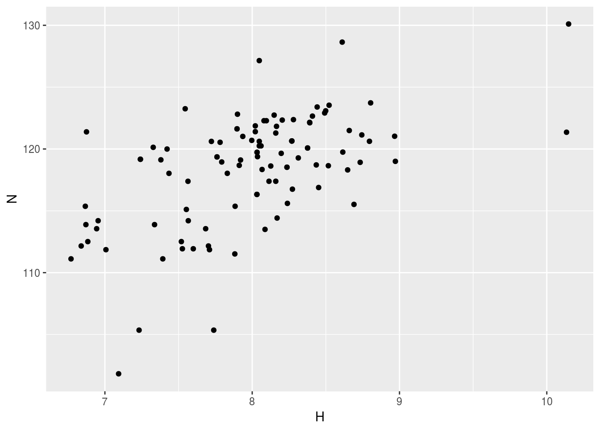
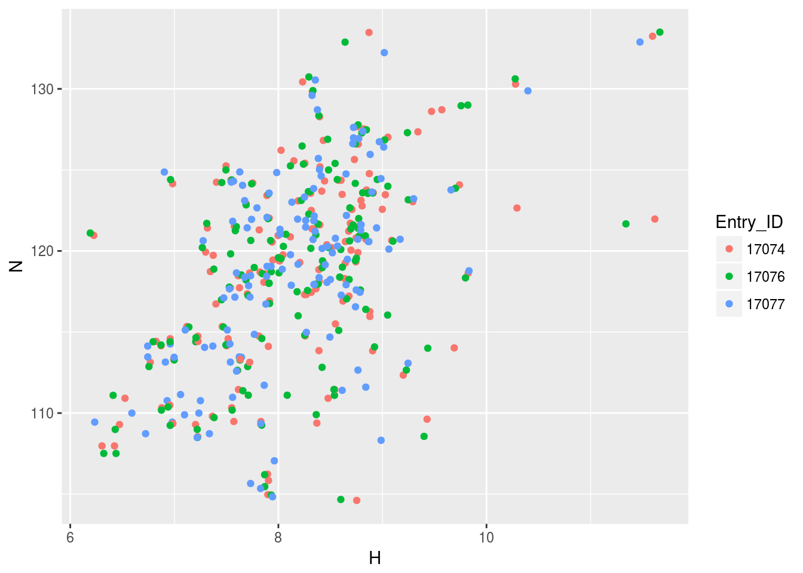
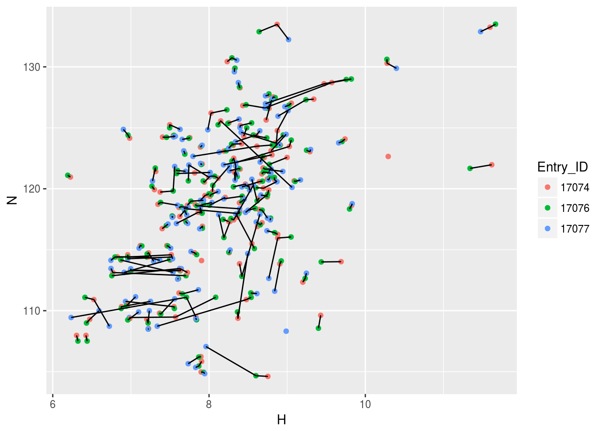
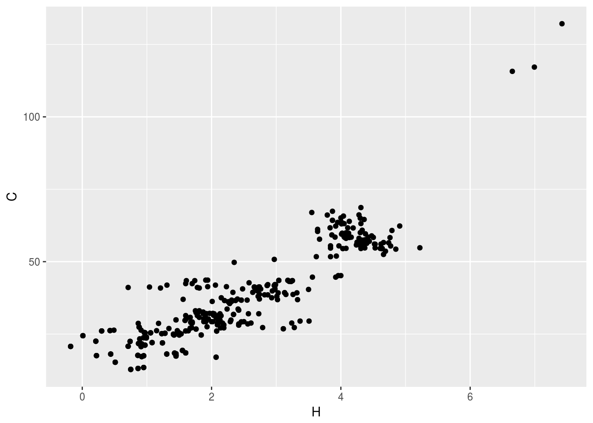
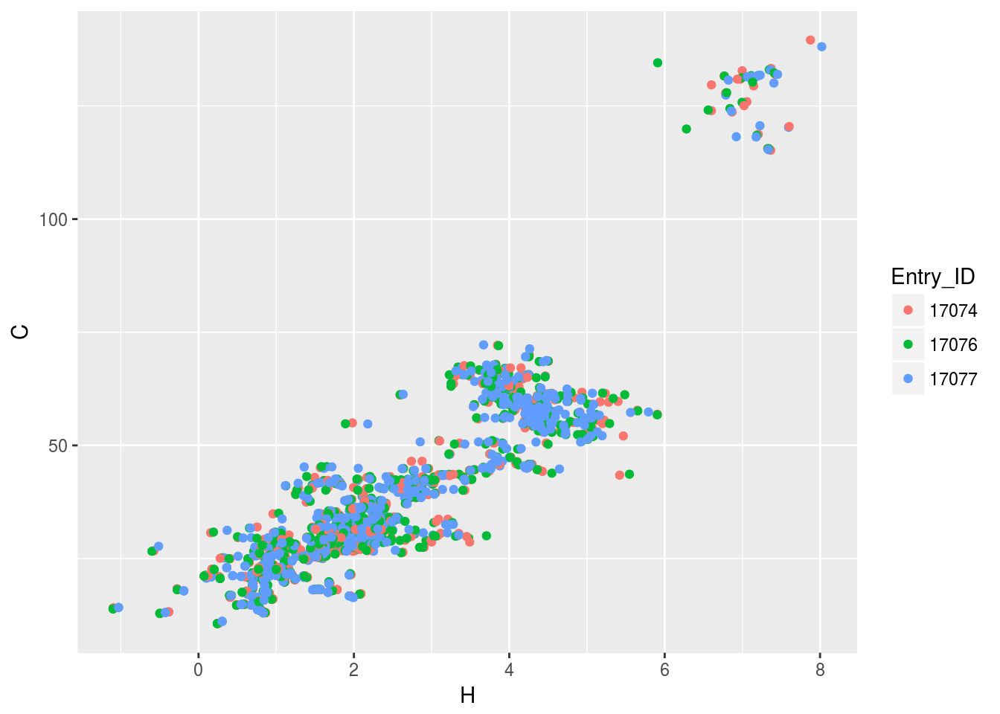
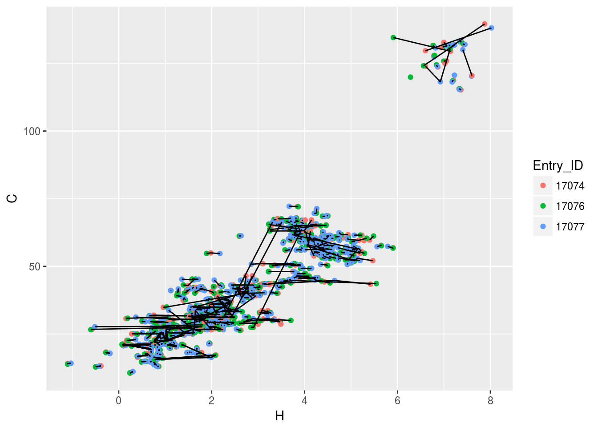
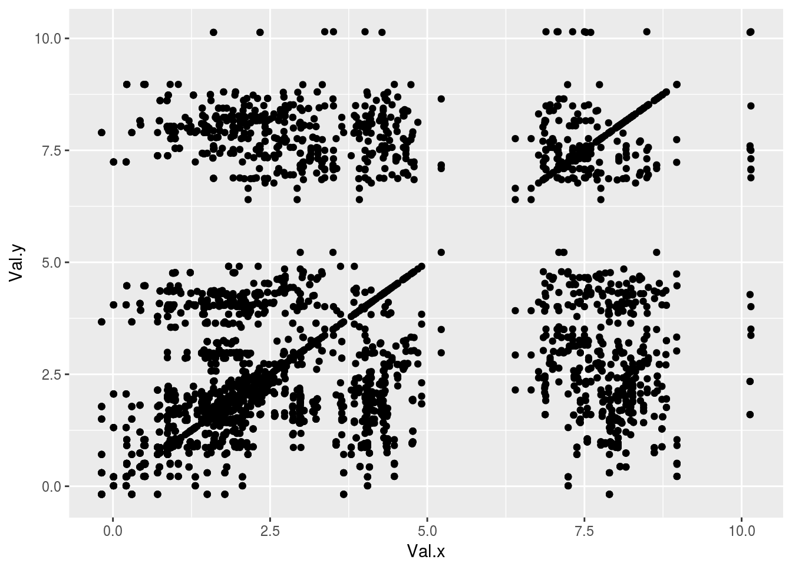
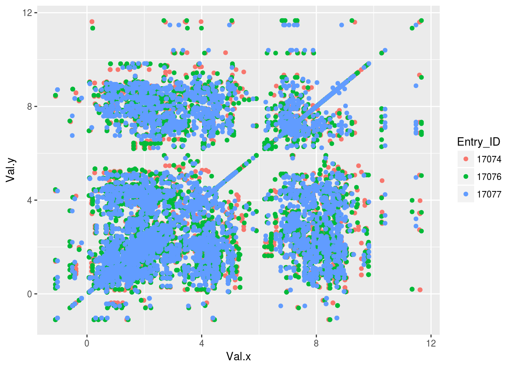

This page explains the general usage of RBMRB package. Detailed documentaion can be found in the help pages of RBMRB package.
library(RBMRB)BMRB data can be imported in three ways
This function will fetch the ‘Atom_chem_shift’ loop from a NMR-STAR file for a given entry or a list of entries in CSV format. This function works on both macromolecules and metabolites data base. For metabolites entry ids should have right prefix (example ‘bmse000034’)
Example:
df1<-fetch_entry_chemical_shifts(15060)
df2<-fetch_entry_chemical_shifts(c(17074,17076,17077))
df2<-fetch_entry_chemical_shifts(c('17074','17076','17077'))
df3<-fetch_entry_chemical_shifts(c('bmse000034','bmse000035','bmse000036'))These data frames have the following columns
colnames(df1)## [1] "ID" "Assembly_atom_ID"
## [3] "Entity_assembly_ID" "Entity_ID"
## [5] "Comp_index_ID" "Seq_ID"
## [7] "Comp_ID" "Atom_ID"
## [9] "Atom_type" "Atom_isotope_number"
## [11] "Val" "Val_err"
## [13] "Assign_fig_of_merit" "Ambiguity_code"
## [15] "Occupancy" "Resonance_ID"
## [17] "Auth_entity_assembly_ID" "Auth_asym_ID"
## [19] "Auth_seq_ID" "Auth_comp_ID"
## [21] "Auth_atom_ID" "Details"
## [23] "Entry_ID" "Assigned_chem_shift_list_ID"Sample data outpu
head(df1)## ID Assembly_atom_ID Entity_assembly_ID Entity_ID Comp_index_ID Seq_ID
## 1 1 . 1 1 20 20
## 2 2 . 1 1 20 20
## 3 3 . 1 1 20 20
## 4 4 . 1 1 20 20
## 5 5 . 1 1 21 21
## 6 6 . 1 1 21 21
## Comp_ID Atom_ID Atom_type Atom_isotope_number Val Val_err
## 1 LEU H H 1 8.149 NA
## 2 LEU CA C 13 56.016 NA
## 3 LEU CB C 13 42.180 NA
## 4 LEU N N 15 122.739 NA
## 5 VAL H H 1 8.048 NA
## 6 VAL CA C 13 63.412 NA
## Assign_fig_of_merit Ambiguity_code Occupancy Resonance_ID
## 1 . 1 . .
## 2 . 1 . .
## 3 . 1 . .
## 4 . 1 . .
## 5 . 1 . .
## 6 . 1 . .
## Auth_entity_assembly_ID Auth_asym_ID Auth_seq_ID Auth_comp_ID
## 1 . . 20 LEU
## 2 . . 20 LEU
## 3 . . 20 LEU
## 4 . . 20 LEU
## 5 . . 21 VAL
## 6 . . 21 VAL
## Auth_atom_ID Details Entry_ID Assigned_chem_shift_list_ID
## 1 HN . 15060 1
## 2 CA . 15060 1
## 3 CB . 15060 1
## 4 N . 15060 1
## 5 HN . 15060 1
## 6 CA . 15060 1fetch_atom_chemical_shifts: This function will fetch the chemical shift data from all the entries for a given atom. The atom name should be in NMR-STAR atom nomenclature. Example:
df4<-fetch_atom_chemical_shifts('CG2')
df5<-fetch_atom_chemical_shifts('C9')These data frames have the following columns
colnames(df4)## [1] "Entry_ID" "Entity_ID"
## [3] "Comp_index_ID" "Comp_ID"
## [5] "Atom_ID" "Atom_type"
## [7] "Val" "Val_err"
## [9] "Ambiguity_code" "Assigned_chem_shift_list_ID"Sample data outpu
head(df4)## Entry_ID Entity_ID Comp_index_ID Comp_ID Atom_ID Atom_type Val
## 1 10001 1 1 ILE CG2 C 15.700
## 2 10001 1 6 ILE CG2 C 17.900
## 3 10002 1 3 ILE CG2 C 17.516
## 4 10002 1 18 VAL CG2 C 22.278
## 5 10002 1 19 THR CG2 C 21.957
## 6 10002 1 26 THR CG2 C 21.779
## Val_err Ambiguity_code Assigned_chem_shift_list_ID
## 1 0.4 1 1
## 2 0.3 1 1
## 3 0.4 1 1
## 4 0.4 1 1
## 5 0.4 1 1
## 6 0.4 1 1fetch_res_chemical_shifts: his function will fetch the chemical shift data from all the entries for a given amino acid (or) nucleic acid. The residue name should be in NMR-STAR nomenclature. You may optionally specify atom name also
Example:
df6<-fetch_res_chemical_shifts('GLY')
df7<-fetch_res_chemical_shifts('HIS','CA')These data frames have the following columns
colnames(df6)## [1] "Val" "Comp_ID"
## [3] "Entity_assembly_ID" "Comp_index_ID"
## [5] "Atom_ID" "Assigned_chem_shift_list_ID"
## [7] "Entry_ID" "Val_err"
## [9] "Atom_type" "Entity_ID"Sample data output
head(df6)## Val Comp_ID Entity_assembly_ID Comp_index_ID Atom_ID
## 1: 174.900 GLY 1 5 C
## 2: 47.200 GLY 1 5 CA
## 3: 107.200 GLY 1 5 N
## 4: 8.010 GLY 1 21 H
## 5: 4.000 GLY 1 21 HA2
## 6: 3.558 GLY 1 21 HA3
## Assigned_chem_shift_list_ID Entry_ID Val_err Atom_type Entity_ID
## 1: 1 10001 0.4 C 1
## 2: 1 10001 0.4 C 1
## 3: 1 10001 0.9 N 1
## 4: 1 10002 0.020 H 1
## 5: 1 10002 0.020 H 1
## 6: 1 10002 0.020 H 1There are few data manipulation functions are available to rearrange the data frame for easy plottling
This function will reformat the chemical shift data frame into a data frame which is easy to plot N15-HSQC spectrum
Example
n15hsqc1<-convert_cs_to_n15hsqc(df1)
n15hsqc2<-convert_cs_to_n15hsqc(df2)The output will look like
head(n15hsqc1)## Entry_ID Comp_index_ID Entity_ID Assigned_chem_shift_list_ID Comp_ID_H
## 1 15060 25 HE21 1 1 GLN
## 2 15060 26 HE21 1 1 GLN
## 3 15060 44 HE21 1 1 GLN
## 4 15060 47 HE21 1 1 GLN
## 5 15060 53 HE21 1 1 GLN
## 6 15060 96 HE21 1 1 GLN
## Comp_ID_N H N
## 1 GLN 7.703 112.158
## 2 GLN 7.393 111.116
## 3 GLN 7.600 111.932
## 4 GLN 7.884 115.368
## 5 GLN 7.337 113.885
## 6 GLN 7.519 112.512This data frame is easy to plot using any plotting library
library(ggplot2)
plt1<-ggplot(n15hsqc1)+geom_point(aes(x=H,y=N))
plt1
plt2<-ggplot(n15hsqc2)+geom_point(aes(x=H,y=N,color=Entry_ID))
plt2
plt3<-ggplot(n15hsqc2)+geom_point(aes(x=H,y=N,color=Entry_ID))+geom_line(aes(x=H,y=N,group=Comp_index_ID))
plt3
This function will reformat the chemical shift data frame into a data frame which is easy to plot C13-HSQC spectrum
Example
c13hsqc1<-convert_cs_to_c13hsqc(df1)
c13hsqc2<-convert_cs_to_c13hsqc(df2)The output will look like
head(c13hsqc1)## Entry_ID Comp_index_ID Entity_ID Assigned_chem_shift_list_ID Comp_ID_C
## 1 15060 101 HA 1 1 ASP
## 2 15060 102 HA 1 1 ASP
## 3 15060 103 HA 1 1 SER
## 4 15060 104 HA 1 1 ASP
## 5 15060 105 HA 1 1 GLU
## 6 15060 106 HA 1 1 GLU
## Comp_ID_H Atom_ID_C Atom_ID_H C H
## 1 ASP CA HA 54.487 4.630
## 2 ASP CA HA 54.572 4.609
## 3 SER CA HA 58.470 4.420
## 4 ASP CA HA 54.567 4.640
## 5 GLU CA HA 56.521 4.271
## 6 GLU CA HA 56.400 4.300This data frame is easy to plot using any plotting library
library(ggplot2)
plt1<-ggplot(c13hsqc1)+geom_point(aes(x=H,y=C))
plt1
plt2<-ggplot(c13hsqc2)+geom_point(aes(x=H,y=C,color=Entry_ID))
plt2
plt3<-ggplot(c13hsqc2)+geom_point(aes(x=H,y=C,color=Entry_ID))+geom_line(aes(x=H,y=C,group=Comp_index_ID))
plt3
This function will reformat the chemical shift data frame into a data frame which is easy to plot the TOCSY spectrum from the data. Note : Since both dimensions have proton chemical shifts, the columns are named as Val.x and Val.y
Example
tocsy1<-convert_cs_to_tocsy(df1)
tocsy2<-convert_cs_to_tocsy(df2)after conversion the data will look like
head(tocsy1)## Entry_ID Entity_ID Comp_index_ID Assigned_chem_shift_list_ID ID.x
## 1 15060 1 100 1 915
## 2 15060 1 100 1 915
## 3 15060 1 100 1 916
## 4 15060 1 100 1 916
## 5 15060 1 101 1 919
## 6 15060 1 101 1 919
## Assembly_atom_ID.x Entity_assembly_ID.x Seq_ID.x Comp_ID.x Atom_ID.x
## 1 . 1 100 GLY HA2
## 2 . 1 100 GLY HA2
## 3 . 1 100 GLY HA3
## 4 . 1 100 GLY HA3
## 5 . 1 101 ASP H
## 6 . 1 101 ASP H
## Atom_type.x Atom_isotope_number.x Val.x Val_err.x Assign_fig_of_merit.x
## 1 H 1 3.960 NA .
## 2 H 1 3.960 NA .
## 3 H 1 4.000 NA .
## 4 H 1 4.000 NA .
## 5 H 1 8.269 NA .
## 6 H 1 8.269 NA .
## Ambiguity_code.x Occupancy.x Resonance_ID.x Auth_entity_assembly_ID.x
## 1 2 . . .
## 2 2 . . .
## 3 2 . . .
## 4 2 . . .
## 5 1 . . .
## 6 1 . . .
## Auth_asym_ID.x Auth_seq_ID.x Auth_comp_ID.x Auth_atom_ID.x Details.x
## 1 . 100 GLY HA1 .
## 2 . 100 GLY HA1 .
## 3 . 100 GLY HA2 .
## 4 . 100 GLY HA2 .
## 5 . 101 ASP HN .
## 6 . 101 ASP HN .
## ID.y Assembly_atom_ID.y Entity_assembly_ID.y Seq_ID.y Comp_ID.y
## 1 915 . 1 100 GLY
## 2 916 . 1 100 GLY
## 3 915 . 1 100 GLY
## 4 916 . 1 100 GLY
## 5 919 . 1 101 ASP
## 6 920 . 1 101 ASP
## Atom_ID.y Atom_type.y Atom_isotope_number.y Val.y Val_err.y
## 1 HA2 H 1 3.960 NA
## 2 HA3 H 1 4.000 NA
## 3 HA2 H 1 3.960 NA
## 4 HA3 H 1 4.000 NA
## 5 H H 1 8.269 NA
## 6 HA H 1 4.630 NA
## Assign_fig_of_merit.y Ambiguity_code.y Occupancy.y Resonance_ID.y
## 1 . 2 . .
## 2 . 2 . .
## 3 . 2 . .
## 4 . 2 . .
## 5 . 1 . .
## 6 . 1 . .
## Auth_entity_assembly_ID.y Auth_asym_ID.y Auth_seq_ID.y Auth_comp_ID.y
## 1 . . 100 GLY
## 2 . . 100 GLY
## 3 . . 100 GLY
## 4 . . 100 GLY
## 5 . . 101 ASP
## 6 . . 101 ASP
## Auth_atom_ID.y Details.y
## 1 HA1 .
## 2 HA2 .
## 3 HA1 .
## 4 HA2 .
## 5 HN .
## 6 HA .plotting TOCSY spectrum
library(ggplot2)
plt1<-ggplot(tocsy1)+geom_point(aes(x=Val.x,y=Val.y))
plt1
plt2<-ggplot(tocsy2)+geom_point(aes(x=Val.x,y=Val.y,color=Entry_ID))
plt2
This function will filter the data frame and remove all non standard amino acids. The data frame should contain the amino acid information in the Comp_ID column
Example
df6<-fetch_atom_chemical_shifts('CG2')
df7<-filter_residue(df6)after filtering the data frame contains data only from standard 20 amino acids